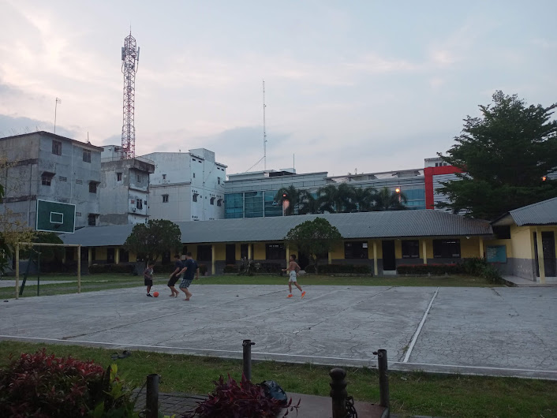

Personal
.jpeg)
Shendy Putri Angelica Sitorus adalah seorang individu yang lahir dan besar di Kota Medan. Sebagai anak pertama dari tiga bersaudara. Shendy tumbuh dalam lingkungan keluarga yang penuh harapan akan dirinya. Shendy suka hal hal yang memerlukan kreativitas seperti mendengarkan lagu dan aktivitas lain sebagainya. Shendy juga seorang individu yang mandiri
Pendidikan
- SMKN 9 MEDAN
- SMPN 18 MEDAN
- SDS KATOLIK MARIANA
- TK KEJORA
Pengalaman
pengalaman semasa sekolah sangatlah penting untuk menambah skill dan mengasah kemampuan.
SDS KATOLIK MARIANA

Menjadi Pemimpin Regu Pramuka 2016/2017
Saya Mendapat Pengalaman yang sangat berharga di masa SD saya.
Di SD saya belajar banyak hal saat menjadi pemimpin regu pramuka. Karena bagi saya masa SD adalah masa dimana kita menemukan jati diri kita dan saya bersyukur saya menemukan jati diri saya di tempat dan kegiatan yang positif.
saat itu saya sukses untuk bersosialisasi,percaya diri,dan berani tampil depan umum.
SMPN 18 MEDAN
.jpeg)
Menjadi anggota Pramuka 2022/2023
Setelah saya Mendapat Pengalaman yang sangat berharga di masa SD saya.
Saya mulai mengikuti banyak kegiatan di SMP ini terutama menjadi anggota Pramuka.
Menjadi anggota memang tidak terlalu banyak tugas. apalagi dimasa itu banyak tugas dan kegiatan yang harus saya lakukan,oleh karena itu saya berfikir untuk menjadi anggota saja.
SMKN 9 MEDAN
.jpeg)
Menjadi siswa dan mengambil jurusan di REKAYASA PERANGKAT LUNAK
Selama saya belajar di SMK di jurusan RPL, saya terlibat dalam beberapa proyek menarik. Salah satu yang paling berkesan adalah saat kami ditugaskan oleh guru kami untuk membuat website weeding. Kami mulai belajar banyak hal baru, mulai dari perancangan antarmuka, pemrograman, dan yang lainnya pengerjaannya memang cukup menyulitkan, tapi rasa puas yang saya dapatkan saat aplikasi berhasil berjalan sangat luar biasa. Dari proyek ini, saya belajar tentang pentingnya kerja sama tim
Contack
Untuk Mengenal Lebih Lanjut dengan saya dapat dihubungi pada akun media sosial berikut ini :
- WhatsApp
- Instagram
- Github